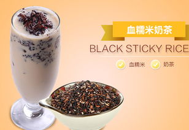

玫瑰小芋圆
- 把水倒入小奶锅，烧开后停火；放入两袋茶包、若干朵玫瑰花，盖上锅盖，等3分钟（此处可用计时器计时），泡开。
- 倒入牛奶，开火加热，此时要注意不要将其煮开，待看到锅沿起了一圈极细小的泡泡时就可以停火。
- 将玫瑰滤去，装杯。之后可依个人口味适当添加蜂蜜。
- 把红薯切成块放入蒸锅中，盖上锅盖大火蒸15分钟。
- 另起一锅，放入250ml清水，煮到水起小泡泡时，放入10g锡兰红茶，转小火煮，大约煮1分钟，煮至颜色变深，夹出红茶包。
- 放入250ml纯牛奶，保持小火，放入适量白糖，搅拌至白糖融化。煮到锅边起泡泡时即可关火；奶茶就做好了。
- 接下来做芋圆，把煮熟的红薯放入碗中压成泥。按2比1的比例放入木薯淀粉，（红薯2，淀粉1），用手揉，成分揉匀揉成面团。
搓成长条，切成小块。把芋圆放入盘中，加少许红薯淀粉，抹匀防止互相粘连。
- 烧一锅开水，水沸腾后放入芋圆，轻轻搅动防止粘锅，中火煮10分钟。把芋圆煮熟，煮熟后捞出放入冷水中，让芋圆更Q弹。
- 最后将小芋圆倒入奶茶中即可。
芒恋姜奶
- 融化：在雪克壶中倒进植脂末20g和100ml 热水，搅拌至溶化，待用；
- 搅匀：在雪克壶中再依次加入纯牛奶100ml、蜂蜜生姜20g、芒果酱30g和热水220ml搅拌均匀即可出品。

血糯米奶茶
- 将红豆、白糯米与血糯米混合淘净，加水浸泡6小时左右，然后倒入锅里，加水熬成粥；
- 奶锅中加清水（视杯量），放入红茶煮1分钟左右，滤掉茶渣，加糖和淡奶煮至将沸熄火；
- 杯中舀入适量（随意）血糯米粥，倒入煮好的奶茶即可；可以用勺，或用粗口径的吸管，小心烫嘴。
焦糖布丁奶茶
- 将布丁和糖与牛奶混合，用小火一边搅拌一边加热至砂糖完全融化
- 鸡蛋打散，一点一点倒入，一边倒一边搅拌均匀。过筛两次，备用。
- 制作焦糖。将水与糖倒入锅中，小火加热至琥珀色，关火，迅速倒入热水。此时焦糖会在锅中激烈地沸腾。
- 模具中倒一点点无味的油（如果没有用有味道的也没多大事），用厨房纸巾（没有就用无味的餐巾纸）擦干净，让碗的内壁里都有油，用肉眼看就只有一点点油星。把焦糖倒入
- 表面盖上锡纸，锅底铺上一块布，把模具小心放入。倒入常温的水（就是自来水），加到模具的一半高。盖上锅盖用小火煮二十分钟。
- 红茶包和沸水泡两分钟，取出茶包。挤压取出的茶包，以获得更多的茶水。加入淡奶油，牛奶和糖，搅拌均匀。
- 取出一份布丁，大略弄散，把奶茶倒入，搅拌均匀。